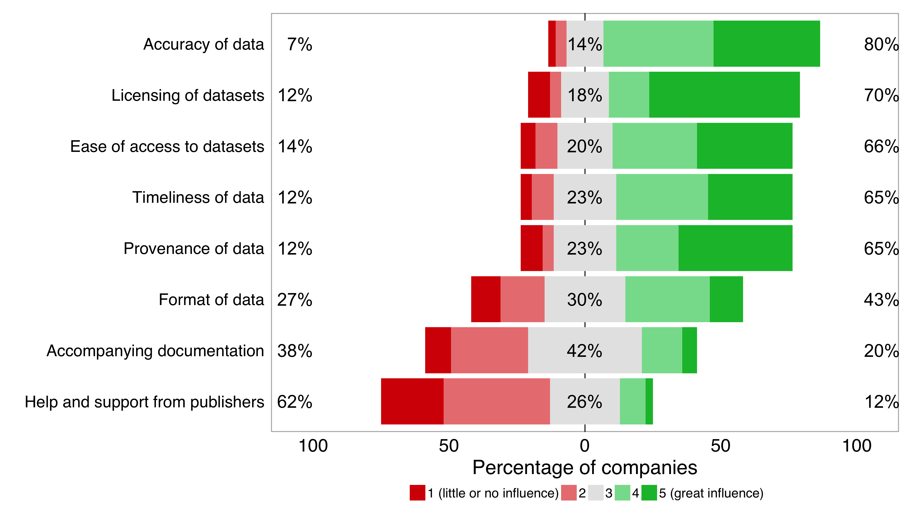

Challenges for open data companies
Data quality and licensing terms are critical factors for companies using open data
Accuracy
Licensing
Timeliness, provenance and accessibility
Other challenges
How to cite
Data quality and licensing terms are critical factors for companies using open data
In our survey, we asked companies to rate how far eight issues, or characteristics, influence their use of open data. These issues were derived from an assessment of open data publishing best practices, based on the Open Data Certificates – a set of standards designed to help make open data easier to find, share and use.

Figure 4.1 - Responses to the question "Please indicate the extent to which each of the following issues influence your company's decision to use open data." (n=74) (Note that the percentages for ‘Accuracy of data’ sum to 101% due to rounding.) See Appendix Table A4.1 for frequencies.
The eight issues appear to have varying levels of influence on a company’s decision to use open data. We provided a free-form response field so companies could elaborate on these and share further insights. The responses were mapped against the eight prescribed issues and are quoted throughout the discussion below.
Accuracy
Many companies that responded (80%) found accuracy of data important, with 39% of companies saying it had great influence on their decision to use open data.
Example responses (related to accuracy of the data) to the question "If you wish to elaborate on any of these issues, please do so":
"Pricing is not an issue as long as the data is of great quality (accuracy) and desirable."
“There is little or no benefit to the user if they do not trust that the data is accurate and up-to-date.”
The data accuracy issues shared by companies through their survey responses and in-depth interviews fall into two categories: i) inaccuracies and quality issues with the data itself, and ii) significantly varying quality and presentation of similar data between different publishers, such as government spending data by department.
Some of the main issues companies raised around data accuracy were that data can be collected or presented inconsistently, and often it is not granular enough. Regarding crime data, for example:
"The second [issue] is changes in the data – [the police] keep on tinkering with what they should include in it. A case in point being our local authorities have a 101 incident, which is [classed as being] anti-social behaviour. So if you see a burnt-out car, or someone's done graffiti, or someone's dumped a mattress in the street, it's antisocial behaviour but it's not a criminal offence.
The local authorities catch incidents and they give that information to the police. The police could very easily break that down, and that could be easily mapped and presented back to you as a citizen. But they just group it all under ‘anti-social behaviour’ and refuse to release that information."
- Clifford McDowell, Doorda
Other accuracy issues highlighted by companies surround the various different standards for data collection and publication, which cause problems when combining data from multiple sources:
"We take data from over 330 different publishers [...] not one of them does the same thing as the next one and most of them don't do the same thing month to month. I’ve got 170 councils in our dataset [...] Some publish virtually nothing, some publish a lot. The variance in quality of the data is incredibly difficult. Data quality is a big issue.
- Ian Makgill, Spend Network
Licensing
An open licence is one that enables anyone to access, use and share data, including companies who can use it to develop commercial products and services.
Over half (55%) of the companies said that the way that datasets are licensed had a great influence on their decision to use data. Only 8% suggested that licensing had little or no influence.
Example response (related to licensing of the data) to the question "If you wish to elaborate on any of these issues, please do so":
"Licensing terms of the dataset should include commercial use."
The UK Open Government Licence is the required licence for use by all central government departments and agencies publishing open data and its use is encouraged for local authorities and other areas of government.
The Creative Commons public domain licence (CC0) and attribution licence (CC-BY) are commonly used open licences for non-government data, and, similarly to the UK Open Government License, allow for commercial reuse of the data. The Creative Commons attribution and share-alike licence (CC-BY-SA) is also used, but may limit a company’s ability to use that data for commercial products and services by requiring them to also attach the same open licence to the data they derive.
Timeliness, provenance and accessibility
Companies indicated that data timeliness, provenance and access also influence their decision to use open data, with 31%, 42% and 35% of them citing it as having great influence, respectively.
Example responses (related to the timeliness, provenance and ease of access to the data) to the question "If you wish to elaborate on any of these issues, please do so":
Timeliness of data
"There is little or no benefit to the user if they do not trust that the data is accurate and up-to-date."
“Ideally [data] has scheduled updates (e.g. OpenStreetMap every 60 seconds)”Provenance of data
“Provenance is vital unless you can independently verify.”Ease of access to datasets
“It is notable that public data stores are ordinarily presented as 'separate' from corporate web pages, such that open data of relevance to specific policy objectives and/or services do not appear in the same place to promote awareness of them and/or facilitate ease of access for non-technical users.”
“The current 'improvements' being implemented at government level has hindered much of our work due to data moving [and] data links often not working.”
Timeliness of data is discussed more by some of the companies interviewed in-depth. In particular, companies would like data to be published with as little delay as possible, often driven by the need to combine datasets, which are more timely:
"We use [claimant data from the Office of National Statistics] and we compare that with the number of [job] vacancies that we observe on Adzuna. I would say that one frustration, which you may have heard from other sources as well, is the timeliness of that data. In particular, the ONS data is effectively a month or two (or possibly even longer) out of date before it gets made available.
I appreciate some of the reasons why there is a delay, but it does feel like there is scope for reducing some of that delay. That’s one of the biggest limitations that we see because obviously our data, due to the nature of our business, is very much real-time. At any minute of the day we can see exactly how many job adverts we’ve got and what the average salaries are, whereas there’s this quite big lag between data being collected by the ONS and the publication of that data."
- James Neave, Adzuna
"I very much run as a stream, I have to constantly flow with data. I want to constantly be as fresh as possible. Albeit some datasets may only be released once a year, but it's enough for some people so you can do direct comparison year on year. But if you're just dropping in random bits of data, it's not a lot of use to people, it's got to be a constant flow so you can map trends and compare the previous activity and so on."
- Clifford McDowell, Doorda
Data provenance relates to its source and the way it has been collected, used and modified. Clear data provenance helps users to understand the context around the open data, and allows them to use it with confidence. For example:
"We provide clear, unambiguous data with provenance, so we say where we got it from and when we got it. That sort of thing is quite hard to get in the business information world and we do it in an effective, efficient way that is more effective and more efficient than the companies getting it themselves.
People are wanting to combine data together and that lack of provenance really makes the data much less useful.
- Chris Taggart, OpenCorporates
Open data being difficult to access was another issue raised by the companies. This is generally down to many different sources of open data, including websites, data stores and portals:
"There's no central data point [...] I know you have the Cabinet Office website, data.gov.uk, but you have to monitor that […] There's lots of local websites and there's the Land Registry as well. There's also Police.co.uk, there's many other areas where data is being sent out. Again that's all released in different ways in different formats. A lot of companies don't even know about the demographic data, or the social economic data, that's available. So it's as much about market intelligence as it is about making that data accessible."
- Clifford McDowell, Doorda
"That’s another problem, if there’s too much [data], you can’t find it. There [are] different places to find different bits, you've got data.gov, you've got all these different websites, all these different agencies. They’ve all grown organically and separate from each other and I know everybody would love one enormous data place where you go to get all your data. The trouble is if that site isn't really good, you're never going to find it."
- Rod Plummer, Shoothill
Data formats, accompanying documentation and support from publishers all have less of an impact on whether or not companies use open data.
Responses regarding the data formats did, however, reveal a variety of opinions on this topic. These particularly relate to the provision of open data in computer-accessible and machine-readable formats, via an Application Program Interface (API), for example, or in linked data form.
Example responses (related to the format of the data) to the question "If you wish to elaborate on any of these issues, please do so":
"Data need to be in a computer readable format. The format type does not matter."
“Access to data via an API (of whatever sort) is usually a big advantage for us.”
“There are a number of reference datasets that we wish the UK public sector would provide in linked data form. If they did, we'd use them a lot.”
“Has to be processable using opensource tools”
“Has to be complete datasets i.e. not stuck behind a sparql endpoint”
The companies didn’t choose to elaborate on the issues of accompanying documentation or help and support from publishers, which also have relatively low influence on the decision to use open data.
This may be an artefact of the employees who responded to the survey on the behalf of their companies, many being technology specialists and/or working closely with open data. Those with expertise may not need help and support from publishers or accompanying documentation.
Other challenges
A further challenge surrounding the use of open data – which wasn’t addressed explicitly in the eight issues discussed – was revealed when the companies were asked to describe whether they had previously used open data but stopped.
This challenge concerns the continuity of open data publishing. Some companies said the open data that they had previously used to develop a product or service had not been updated or had become unavailable.
Example responses (related to the continuity of data publishing) to the question "If your company has previously used open data in particular products and/or services but ceased to do so, could you please describe why?"
"Still use old version but, for example, VisitEngland no longer appear to maintain their list of tourist attractions."
“– because, the map was produced as a ‘one off’ and wasn't updated.”
“There is a long way to go before we get real open data from government – many requests are treated as FOIs not data provision. All work with Gov data is fragile as you cannot guarantee that the following year a different data officer won't take a different view as to what will be realised and why.”
The responses describe issues surrounding discontinuous publishing, particularly by government. Companies describe how data they used was produced as a one-off and not maintained as an ongoing release. The usefulness of Freedom of Information (FOI) requests, and the data they may release, to companies in the UK is also questioned:
"The biggest issue [with open data] is someone could just stop providing a dataset. That's the biggest problem. So if someone comes awry or it just gets taken away, I can't end up forcing them to release datasets, that's the biggest problem.
If I was to [make] a Freedom of Information request, that would be a one-off and within a few weeks would pretty much become useless to people."
- Clifford McDowell, Doorda
The need for more open data to be published by government is a common issue raised by companies interviewed. Companies discuss in detail what kinds of open data could be used commercially, with two distinct themes emerging from the interviews.
The companies suggest that there is still more work to be done on the part of government to release open data. The partial release of spend statements and other transaction data by publicly-funded entities, such as the NHS, is a challenge for companies developing products and services. This partial release, and subsequent demand for more open data to be published, can result from inconsistencies in publishing across government entities, or incompleteness of the data they do publish. For example:
"I don’t mind inconsistency in the publishing [of the open data]. What is really problematic is not publishing at all. For example, nearly half of the NHS doesn’t have to publish spend statements because they're supposed to be independent of central control. Localism shouldn't be used as an excuse to create a democratic deficit, and when I say not publishing, that could be about sub-quality data as well as no data. There’s a difference between dirty data, where we can extract it if we work on it, and data that doesn’t have information. So give me a six months of transactions without any dates, that’s no use. We can’t work with that. So that’s the first challenge, getting useable data."
- Ian Makgill, Spend Network
"The future of open data is in the hands of governments because what we’re talking about, for the most part, is core public data that was always meant to be part of the public record but that over the last 10 or 20 years has turned into something that they sell. I think that the UK has led the world in this and is now starting to genuinely reap benefits from this, in terms of both innovation and in internal processes. Governments, particularly those governments that sign the Open Data Charter, need to follow that through otherwise all the things they talked about to do with transparency, better governance, innovation and so on, will not come to fruition. I think if we want those things, if we want good governance, if we want transparency, if we want a healthy democracy and if we want innovation, then open data is an absolute requirement because all of those statutory core datasets are essential to this."
- Chris Taggart, OpenCorporates
"Open data needs to go more local. I think [government] needs to start getting some pressure applied on [local councils]. Where are the public toilets? Some release [that data] some don't.
[Data about] how tall [the trees are], about the local parks, about dogs being caught, anti-social behaviour incidents, social housing, planning applications, a request for a new planning application [and] why it's been rejected – all this should be freely available online in a standard format, so you, as a citizen, can just tap in instantly and see what's happening. If data was more freely available we would be even more adult about how we engage with government."
- Clifford McDowell, Doorda
Companies also describe how the release of more open government data could realise commercial opportunities by enabling them to develop better or new products and services:
"The open data portion of Companies House information is quite good but it is a little bit limited and it would be useful if they could make more of it publicly available.
It would be valuable for us because we’d be able to provide more information about employers for our users so that, say you click on a particular job advert on Adzuna, you could for example see that [...] the employing company is Tesco. Then, if we were able to get the information from Companies House open data, we could have a more detailed page of information about Tesco talking about, for example, the total size of the business, number of staff, turnover, revenue and profit over the last few years. I believe that only some of that interesting information is currently available through Companies House open data."
- James Neave, Adzuna
"Transparency is good but I think a more interesting aspect [of public sector data release] is when you can use that data to make better decisions [...] to either improve the way that somewhere is governed or to make better use of limited money"
- Bill Roberts, Swirrl
You can find a summary of open data issues that could be addressed by government to continue to drive innovation in our conclusion and recommendations.
How to cite
Please cite this report as: Open Data Institute (2015) Open data means business: UK innovation across sectors and regions. London, UK. Available at open-data-means-business-uk-innovation-sectors-regions
PREVIOUS PAGE / NEXT PAGE